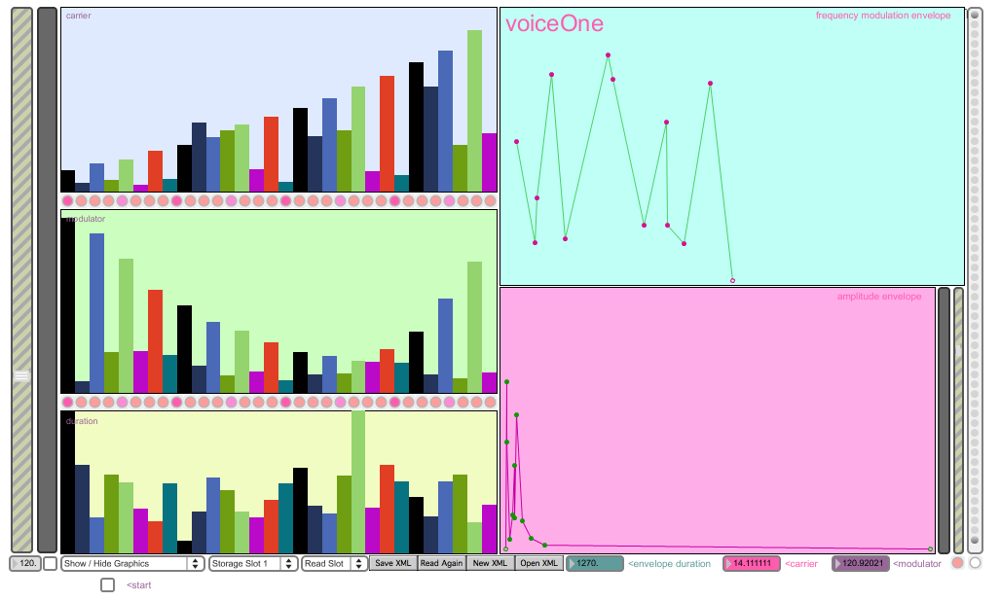
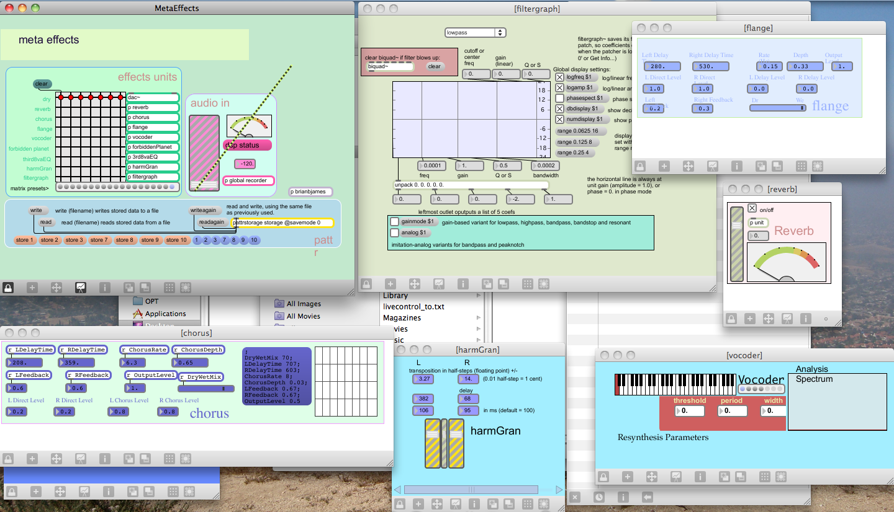
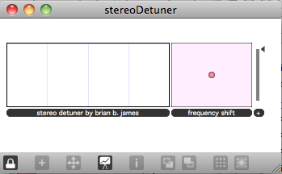
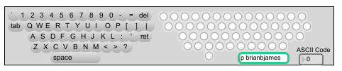
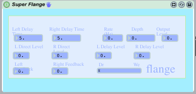
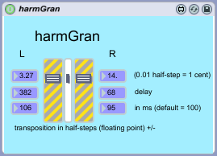

Max/MSP Patches for Your Enjoyment
Here is a modest collection of Max/MSP patches for your pleasure. If you are new to Max, you can download it here. I am open to comments on the patches. The patches are freeware, and they should be run in Max 5 or higher. Most of all, I hope you can make some interesting audio with these.
32 Step FM Based Sequencer

This sequencer is great for glitch style loops or a-tonal drones. It has a 40 Slot XML based banking mechanism. Envelopes can be drawn for both amplitude and Frequency Modulation, and the user has control of carrier frequency, modulator frequency, duration, and output per step. Download the patch here.
Effects Rack

A plug and play effects rack that can be added to any existing patch. 8 effects units and XML preset saving. Download the patch here.
Stereo Detuner

A simple frequency de-tuning plug-in for Abelton Live. Download the patch here.
qwerty

Drop this in your Max project and plug in the have instant keyboard-triggered events. Download here.
Super Flange

Flange effects (of sorts) patch for Max for Live. Add this patch to ~/Library/Application Support/Presets/Audio Effects/Max Audio Effects then open the patch from in Live > Audio Effects > Max Audio Effects to add some spicey flange to your audio. Download here.
harmGran

Harmonic granulizer for Max for Live which pitch shifts by cent increments, outputting to L and R independently. Add this patch to ~/Library/Application Support/Presets/Audio Effects/Max Audio Effects then open the patch from in Live > Audio Effects > Max Audio Effects to add detuning with or without delay. Download here.